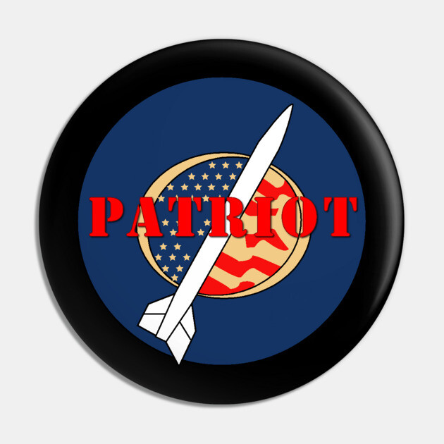
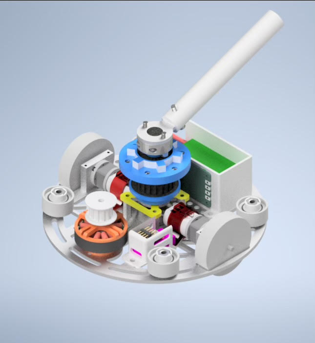
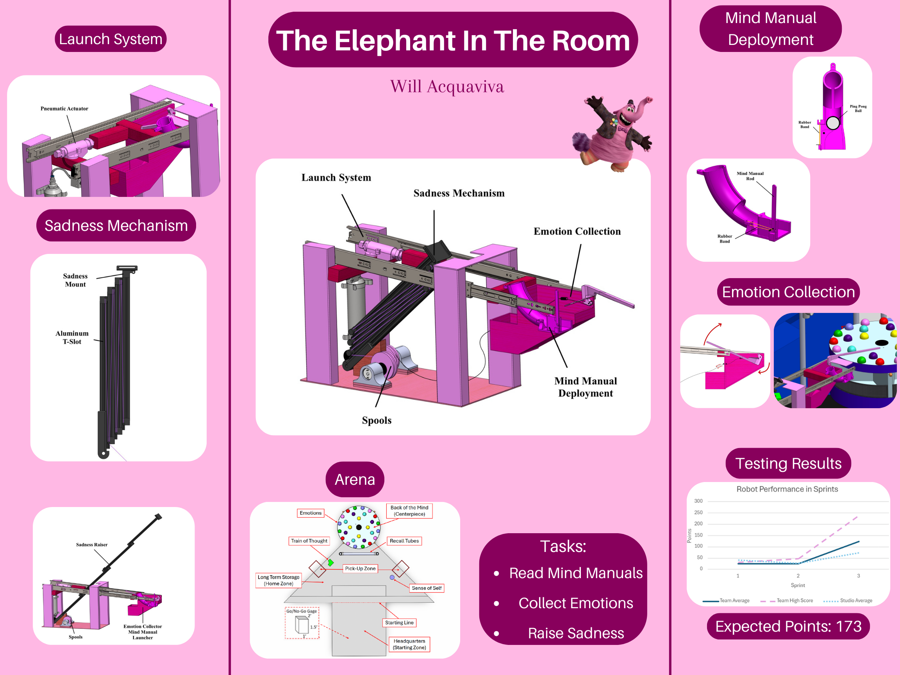
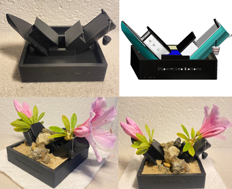
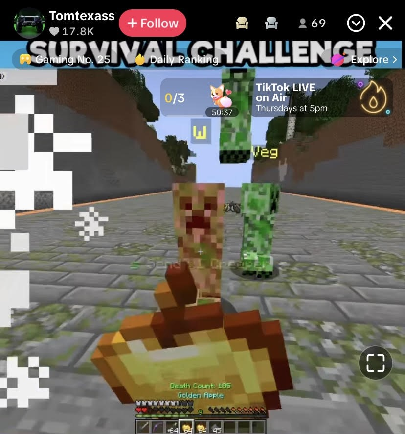
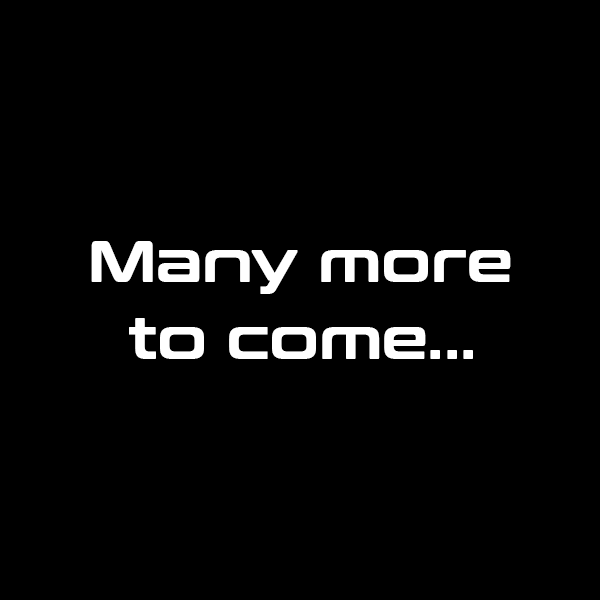

Raytheon (RTX) – Patriot Missile Team Intern May 2025 - August 2025
As an engineer on the Patriot missile program at Raytheon, I improved manufacturing efficiency by conducting DFM reviews that identified five critical issues and updating a drawing specification that cut supplier errors by 95%. My analytical work included performing a 30-part tolerance stack-up to ensure sub-assembly fit and calculating an assembly's center of gravity to within ±0.1 lb. I solved a key production issue by designing a new CCA prototype and creating three custom test fixtures, which eliminated all post-installation heat cycle failures. Additionally, I managed the engineering change request process for the Patriot shelters, ensuring strict configuration control and 100% BOM accuracy.
RoboJackets Battle Bots 3 lb team member.
My ME 2110 Project.
Details about the 'Elephant in the Room' ME 2110 project will go here.
Developing a social media application for automotive enthusiasts.

As the Founder of Plate Pulse, I am developing a cross-platform social media application using React Native to connect the automotive enthusiast community. I implemented a core feature for license plate lookups by integrating a third-party DMV API with end-to-end data encryption. To scale the platform, I am also assembling a team of software engineers and marketing personnel to boost market visibility and drive user acquisition.
Opted to design an autosorting toolbox.

Hytech racing Controls / Suspension team member.

Culturally inpsired creative design project.
Python Project connecting enhancing livestream capabilities.
Currently working on development of website for GT startup.
